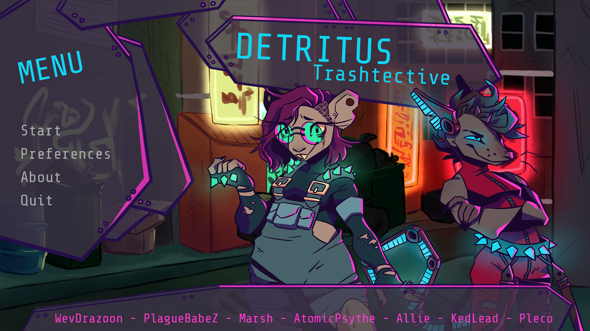
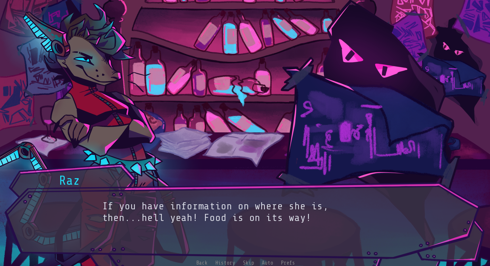

×

Detritus: Trashtective
A Visual Novel Prototype
Process

This project was made for Dallas Society of Play’s Pompous trash game Jam in July 2021. It was made in the Ren’Py game engine, whose native scripting language is based on Python. This was a team project (see credits below). As a team, we held many meetings to decide on the story of the game before even beginning the coding, character design and environment design. Once we had settled on a story, the first half of the Game Jam was spent on developing assets. I created the backgrounds for the game. Simultaneously, the writers worked on the story for the game. Once both components were complete, we moved onto coding. The game is a point-and-click visual novel adventure which meant we needed to code our game based on the items and characters the player could encounter.
Intentions
The intention of this project was to create a fun, quirky yet ambitious game within a limited time frame. For nearly everyone in the group, it was our first time working on a large project. The whole experience was new and fun, and I think our objective was achieved. This project is also the one that made me realize that I want to work in game development in the future. If I were to develop this project further, I would add multiple quest lines to give the player’s choices more weight in the story, thus making it more interactive.

Credits
Writing: Emily Rampersad, Foti Aivaliklis
Artwork: Katherine Duong-Brisebois (Characters)
Alissia Bocarro (Backgrounds), Foti Aivaliklis (Items)
Coding: Arevig Nahabedian, Hero Fajardo, Alissia Bocarro
Sound Design: Arianna Di Libero, Hero Fajardo
Artwork: Katherine Duong-Brisebois (Characters)
Alissia Bocarro (Backgrounds), Foti Aivaliklis (Items)
Coding: Arevig Nahabedian, Hero Fajardo, Alissia Bocarro
Sound Design: Arianna Di Libero, Hero Fajardo